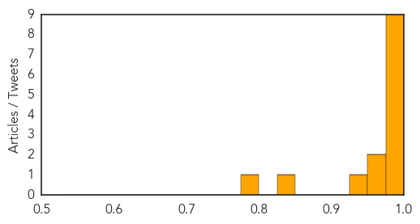
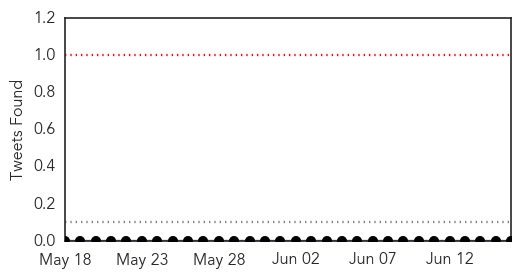

Chikungunya
30-Day Web Trend
11 alerts, 1 warnings

30-Day Twitter Trend
1 alerts, 0 warnings

Article Locations

Article Confidences
Top Articles:
- 0.999
- Chikungunya coming to the US? What you need to know about the virus
- 0.999
- Caribbean chikungunya cases top 170,000
- 0.999
- Another mosquito-borne virus
- 0.999
- Mosquito-borne virus chikungunya worries CDC
- 0.998
- Chikungunya spreads to Central America
- 0.996
- Ky. officials investigate possible mosquito-borne 'chik-v' cases
- 0.995
- Travelers to Caribbean cautioned on mosquito-borne chikungunya
- 0.983
- New Mosquito virus may hit U.S. shores
- 0.980
- Minnesota doctor bit by emerging virus
- 0.971
- Officials: 2 cases of new virus in Rhode Island
- 0.960
- Public Health calls for priority for vulnerable patients with Chikungunya
- 0.928
- Chikungunya infecting people in the U.S.
- 0.838
- ABC-7.com WZVN News for Fort Myers, Cape Coral & Naples, Florida
- 0.794
- Concerns of U.S. Mosquito-Borne Disease Outbreak Increase
Top Tweets:
-
No tweets found for Jun 16, 2014
Ebola
30-Day Web Trend
6 alerts, 0 warnings

30-Day Twitter Trend
1 alerts, 0 warnings

Article Locations

Article Confidences

Top Articles:
Top Tweets:
-
No tweets found for Jun 16, 2014